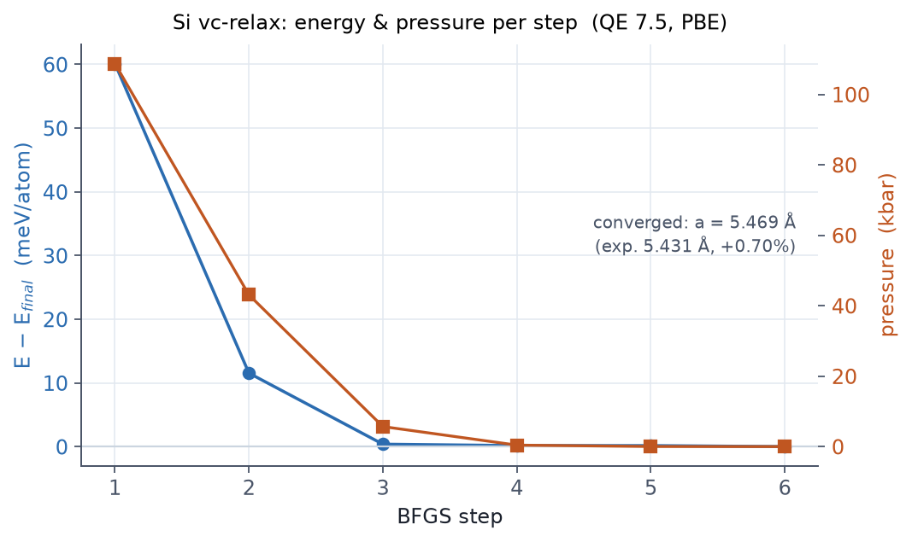

Goal
Start from a deliberately wrong lattice constant (10.00 bohr) and let a variable-cell relaxation find the PBE equilibrium. Learn to read a BFGS trajectory, and close with the Pulay-stress rerun rule.
New cards and variables
| Item | Role |
|---|---|
calculation='vc-relax' |
Atoms plus cell |
&IONS / &CELL |
BFGS settings, press_conv_thr |
cell_dofree='ibrav' |
Cell size only, cubic symmetry kept |
etot_conv_thr / forc_conv_thr |
Ionic-step convergence criteria |
Input file
&CONTROL
calculation = 'vc-relax'
prefix = 'si_vc'
outdir = './tmp/'
pseudo_dir = './pseudo/'
etot_conv_thr = 1.0d-5 ! Ry
forc_conv_thr = 1.0d-4 ! Ry/bohr
nstep = 100
tprnfor = .true.
tstress = .true.
/
&SYSTEM
ibrav = 2
celldm(1) = 10.00 ! deliberately wrong starting point
nat = 2
ntyp = 1
ecutwfc = 40
ecutrho = 320
occupations = 'fixed'
/
&ELECTRONS
conv_thr = 1.0d-10 ! tighter SCF for vc-relax
/
&IONS
ion_dynamics = 'bfgs'
/
&CELL
cell_dynamics = 'bfgs'
press_conv_thr = 0.1 ! kbar
cell_dofree = 'ibrav' ! keep cubic symmetry
/
ATOMIC_SPECIES
Si 28.0855 Si.pbe-n-kjpaw_psl.1.0.0.UPF
ATOMIC_POSITIONS (alat)
Si 0.00 0.00 0.00
Si 0.25 0.25 0.25
K_POINTS (automatic)
8 8 8 0 0 0
Run
mpirun -np 6 pw.x -nk 6 -in si.vcrelax.in > si.vcrelax.out
Output and figure: measured

| Item | Measured |
|---|---|
| BFGS convergence | 6 SCF cycles |
| Final volume | 275.989 bohr³ = 40.897 ų (primitive cell, V = a³/4) |
| Equilibrium lattice constant | a = 5.469 Å |
| Experiment | 5.431 Å, so PBE overestimates by +0.70% |
The final cell appears in the Begin final coordinates block at the end of
the output (a CELL_PARAMETERS (alat= 10.0) matrix with scale 0.5168). The
roughly 1% lattice overestimate of PBE is a well-known systematic trend,
and here it is, measured.
The closing rule: run a fresh scf on the final structure. The
plane-wave basis changes with the cell (Pulay stress), so the energy of the
last vc-relax step was computed in the old basis
(Chapter 09).
Exercises
- Replace
cell_dofree='ibrav'with'all'. Does the final cell stay cubic? - Move one atom from (0.25, 0.25, 0.25) to (0.26, 0.26, 0.26) and check
that a fixed-cell
relaxpulls it back. - In that distorted structure, pin both atoms with
if_pos 0 0 0. What happens? - Rerun
scfon the optimized structure and compare with the last vc-relax step energy; the difference is the size of the Pulay contamination.
Running vc-relax with an everyday conv_thr
of 1.0d-6: the noisy forces and stress make BFGS oscillate. Stress is
also more cutoff-sensitive than the energy, so pass a
stress-based convergence test first.
Related chapters
09 Structure optimization · 05 Cutoff and k-point convergence